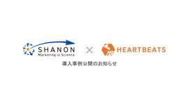
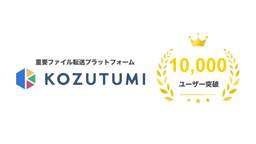

株式会社ハートビーツ（HEARTBEATS Corporation）｜AWS・クラウド・サーバーなどのインフラ運用を24時間365日サポート
https://heartbeats.jp/
株式会社ハートビーツ（HEARTBEATS）はAWSをはじめ各社クラウドに対応。サーバー監視・管理、フルマネージドサービスを中心に、ITインフラ運用専門のエンジニアがお客様を24時間365日サポートするMSPベンダーです。
フィード

【株式会社シャノン様 導入事例公開】24時間365日の監視を委託し、運用負荷を3〜4割軽減 ― 開発チームが製品開発に集中できる体制へ
株式会社ハートビーツ（HEARTBEATS Corporation）｜AWS・クラウド・サーバーなどのインフラ運用を24時間365日サポート
株式会社シャノン様とのお取組による、24時間365日の監視委託で運用負荷を3〜4割軽減した導入事例を公開いたしました。 本プロジェクトでは、株式会社シャノン様のSaaSサービスのインフラ運用において、24時間365日の監投稿 【株式会社シャノン様 導入事例公開】24時間365日の監視を委託し、運用負荷を3〜4割軽減 ― 開発チームが製品開発に集中できる体制へ は 株式会社ハートビーツ（HEARTBEATS Corporation）｜AWS・クラウド・サーバーなどのインフラ運用を24時間365日サポート に最初に表示されました。
19時間前

重要ファイル転送プラットフォーム「Kozutumi」、登録者数が10,000ユーザーを突破 〜正式リリースから約3年9ヶ月、企業の脱PPAPとセキュリティ・コンプライアンス強化を支援〜
株式会社ハートビーツ（HEARTBEATS Corporation）｜AWS・クラウド・サーバーなどのインフラ運用を24時間365日サポート
”重要ファイルの「渡す」「受け取る」をもっと簡単・もっとセキュアに” をビジョンに掲げる重要ファイル転送プラットフォーム『Kozutumi』のユーザー数（登録アカウント数）が10,000ユーザーを突破したことをお知らせし投稿 重要ファイル転送プラットフォーム「Kozutumi」、登録者数が10,000ユーザーを突破 〜正式リリースから約3年9ヶ月、企業の脱PPAPとセキュリティ・コンプライアンス強化を支援〜 は 株式会社ハートビーツ（HEARTBEATS Corporation）｜AWS・クラウド・サーバーなどのインフラ運用を24時間365日サポート に最初に表示されました。
5日前

所属エンジニアが新潟県「地域創生・社会課題解決 AI コンテスト 2026」にて最優秀賞受賞のお知らせ
株式会社ハートビーツ（HEARTBEATS Corporation）｜AWS・クラウド・サーバーなどのインフラ運用を24時間365日サポート
アマゾン ウェブ サービス ジャパン合同会社（AWS ジャパン）が主催する「地域創生・社会課題解決 AI コンテスト 2026」において、弊社所属エンジニアの北野正樹が所属するチーム（計2名）が最優秀賞を受賞し、「AWS投稿 所属エンジニアが新潟県「地域創生・社会課題解決 AI コンテスト 2026」にて最優秀賞受賞のお知らせ は 株式会社ハートビーツ（HEARTBEATS Corporation）｜AWS・クラウド・サーバーなどのインフラ運用を24時間365日サポート に最初に表示されました。
12日前
学生向け実践型ハッカソン「Tornado2026」に教育パートナーとして参画のお知らせ
株式会社ハートビーツ（HEARTBEATS Corporation）｜AWS・クラウド・サーバーなどのインフラ運用を24時間365日サポート
一般社団法人夢未来・デジタル起業支援ラボが主催する学生向け実践型ハッカソン「Tornado2026」に、教育パートナーとしての参画をお知らせいたします。 「Tornado2026」とは 「AIが答えを出す時代に、チームで投稿 学生向け実践型ハッカソン「Tornado2026」に教育パートナーとして参画のお知らせ は 株式会社ハートビーツ（HEARTBEATS Corporation）｜AWS・クラウド・サーバーなどのインフラ運用を24時間365日サポート に最初に表示されました。
25日前
所属エンジニアの佐野 裕による書籍「インフラエンジニアを目指す人が最初に読む本」出版のお知らせ
株式会社ハートビーツ（HEARTBEATS Corporation）｜AWS・クラウド・サーバーなどのインフラ運用を24時間365日サポート
当社所属のエンジニアで「インフラエンジニアの教科書」の著者である佐野 裕による、「インフラエンジニアを目指す人が最初に読む本」が執筆・出版されたことをお知らせいたします。 ハートビーツは、当社ミッションである『技術とあな投稿 所属エンジニアの佐野 裕による書籍「インフラエンジニアを目指す人が最初に読む本」出版のお知らせ は 株式会社ハートビーツ（HEARTBEATS Corporation）｜AWS・クラウド・サーバーなどのインフラ運用を24時間365日サポート に最初に表示されました。
1ヶ月前
関西発のビジネス＆カルチャーカンファレンス「RISE KANSAI 2026」出展のお知らせ
株式会社ハートビーツ（HEARTBEATS Corporation）｜AWS・クラウド・サーバーなどのインフラ運用を24時間365日サポート
2026年8月26日（水）に大阪・なんばHatchで開催される関西発のビジネス＆カルチャーカンファレンス「RISE KANSAI 2026」に出展いたします。 本展では、会場内ブースにて、24時間365日の運用保守やAW投稿 関西発のビジネス＆カルチャーカンファレンス「RISE KANSAI 2026」出展のお知らせ は 株式会社ハートビーツ（HEARTBEATS Corporation）｜AWS・クラウド・サーバーなどのインフラ運用を24時間365日サポート に最初に表示されました。
1ヶ月前
関西発のビジネス＆カルチャーカンファレンス「RISE KANSAI 2026」出展のお知らせ
株式会社ハートビーツ（HEARTBEATS Corporation）｜AWS・クラウド・サーバーなどのインフラ運用を24時間365日サポート
2026年8月26日（水）に大阪・なんばHatchで開催される関西発のビジネス＆カルチャーカンファレンス「RISE KANSAI 2026」に出展いたします。 本展では、会場内ブースにて、24時間365日の運用保守やAW投稿 関西発のビジネス＆カルチャーカンファレンス「RISE KANSAI 2026」出展のお知らせ は 株式会社ハートビーツ（HEARTBEATS Corporation）｜AWS・クラウド・サーバーなどのインフラ運用を24時間365日サポート に最初に表示されました。
1ヶ月前
インターネットテクノロジーの国内最大級イベント「Interop Tokyo 2026」出展のお知らせ
株式会社ハートビーツ（HEARTBEATS Corporation）｜AWS・クラウド・サーバーなどのインフラ運用を24時間365日サポート
2026年6月10日（水）〜12日（金）の3日間、幕張メッセで開催されるインターネットテクノロジーの国内最大級イベント「Interop Tokyo 2026」に出展いたします。 本展では、会場内『パビリオンエリア（小間番投稿 インターネットテクノロジーの国内最大級イベント「Interop Tokyo 2026」出展のお知らせ は 株式会社ハートビーツ（HEARTBEATS Corporation）｜AWS・クラウド・サーバーなどのインフラ運用を24時間365日サポート に最初に表示されました。
1ヶ月前
【8/4（火）ウェビナー】生成AI時代のインフラ自動化、その設計で本番運用まで耐えられますか？～IaC・CI/CD導入で破綻しないためのプロジェクト設計と導入ステップ～
株式会社ハートビーツ（HEARTBEATS Corporation）｜AWS・クラウド・サーバーなどのインフラ運用を24時間365日サポート
ウェビナーのお知らせです。8月4日（火）10:00より、『生成AI時代のインフラ自動化、その設計で本番運用まで耐えられますか？～IaC・CI/CD導入で破綻しないためのプロジェクト設計と導入ステップ～』と題したウェビナー投稿 【8/4（火）ウェビナー】生成AI時代のインフラ自動化、その設計で本番運用まで耐えられますか？～IaC・CI/CD導入で破綻しないためのプロジェクト設計と導入ステップ～ は 株式会社ハートビーツ（HEARTBEATS Corporation）｜AWS・クラウド・サーバーなどのインフラ運用を24時間365日サポート に最初に表示されました。
1ヶ月前
【8/4（火）ウェビナー】生成AI時代のインフラ自動化、その設計で本番運用まで耐えられますか？～IaC・CI/CD導入で破綻しないためのプロジェクト設計と導入ステップ～
株式会社ハートビーツ（HEARTBEATS Corporation）｜AWS・クラウド・サーバーなどのインフラ運用を24時間365日サポート
ウェビナーのお知らせです。8月4日（火）10:00より、『生成AI時代のインフラ自動化、その設計で本番運用まで耐えられますか？～IaC・CI/CD導入で破綻しないためのプロジェクト設計と導入ステップ～』と題したウェビナー投稿 【8/4（火）ウェビナー】生成AI時代のインフラ自動化、その設計で本番運用まで耐えられますか？～IaC・CI/CD導入で破綻しないためのプロジェクト設計と導入ステップ～ は 株式会社ハートビーツ（HEARTBEATS Corporation）｜AWS・クラウド・サーバーなどのインフラ運用を24時間365日サポート に最初に表示されました。
2ヶ月前